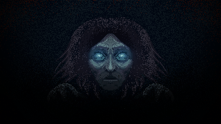
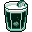
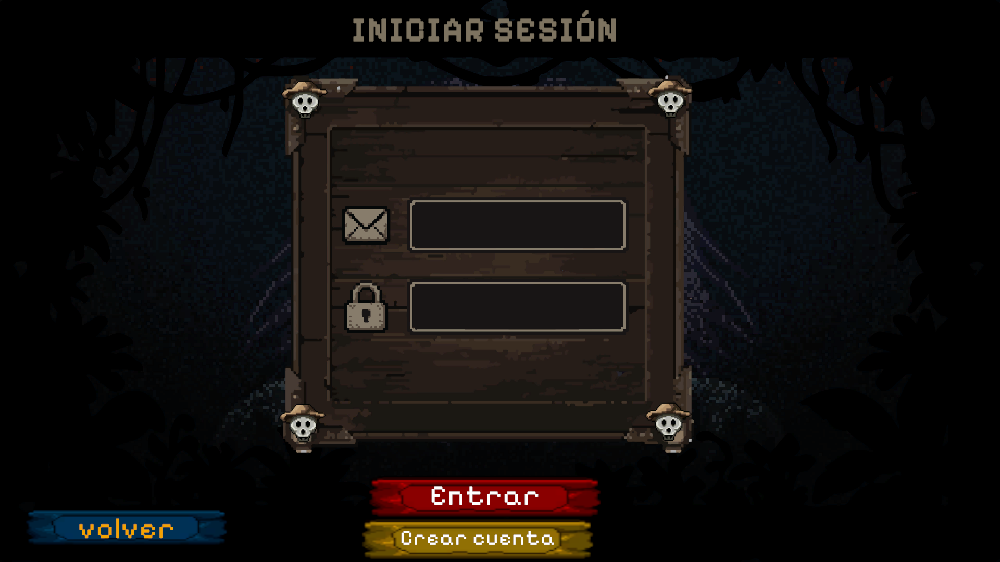

<title>A Punta de Machete</title>
<meta name="claude:viewport-fit-sides" content="cover">
<link rel="preconnect" href="https://fonts.googleapis.com">
<link rel="stylesheet" href="https://fonts.googleapis.com/css2?family=Pixelify+Sans:wght@500;700&family=Barlow:wght@400;500;600&family=Barlow+Condensed:wght@600&display=swap">
<style>
/* Layout: portada a sangre con la Llorona, luego una columna de "tablas" de madera nocturna; un solo tema oscuro a proposito (la selva de noche). */
:root {
  --noche: #0a0e14;        /* fondo: selva de noche */
  --noche-2: #121822;      /* superficies */
  --madera: #3a2a1f;       /* tablas del juego */
  --madera-borde: #5c4330; /* bordes de tabla */
  --hueso: #e9e2d0;        /* texto principal */
  --niebla: #9aa4b2;       /* texto secundario */
  --espectro: #8fd0f0;     /* ojos de la Llorona */
  --oro: #f2a300;          /* dorado de los textos del juego */
  --sangre: #c8321f;       /* boton Entrar */
  --font-display: "Pixelify Sans", "Courier New", monospace;
  --font-body: "Barlow", system-ui, -apple-system, "Segoe UI", sans-serif;
  --font-dato: "Barlow Condensed", "Arial Narrow", system-ui, sans-serif;
  color-scheme: dark;
}
* { box-sizing: border-box; }
body {
  background: var(--noche);
  color: var(--hueso);
  font-family: var(--font-body);
  font-size: 1.0625rem;
  line-height: 1.6;
}
a { color: var(--espectro); }
a:focus-visible, .boton:focus-visible { outline: 3px solid var(--oro); outline-offset: 3px; }
.envoltura {
  max-width: 68rem;
  margin: 0 auto;
  padding-left: max(16px, env(safe-area-inset-left, 0px));
  padding-right: max(16px, env(safe-area-inset-right, 0px));
}
h1, h2, h3 { font-family: var(--font-display); font-weight: 700; line-height: 1.15; text-wrap: balance; margin: 0; }
h2 { font-size: clamp(1.6rem, 3.2vw, 2.25rem); color: var(--hueso); }
h3 { font-size: 1.15rem; color: var(--oro); font-weight: 500; }
p { margin: 0; }
.etiqueta {
  font-family: var(--font-dato);
  text-transform: uppercase;
  letter-spacing: 0.12em;
  font-size: 0.85rem;
  color: var(--espectro);
}
.pixel { image-rendering: pixelated; image-rendering: crisp-edges; }

/* ---------- Portada ---------- */
.portada {
  position: relative;
  overflow: hidden;
  border-bottom: 4px solid var(--madera-borde);
}
.portada img.fondo {
  position: absolute; inset: 0;
  width: 100%; height: 100%;
  object-fit: cover; object-position: center 35%;
  opacity: 0.85;
}
.portada::after {
  content: ""; position: absolute; inset: 0;
  background: linear-gradient(90deg, rgba(10,14,20,0.92) 0%, rgba(10,14,20,0.55) 45%, rgba(10,14,20,0.1) 100%),
              linear-gradient(0deg, var(--noche) 0%, transparent 35%);
}
.portada .envoltura {
  position: relative; z-index: 1;
  padding-block: clamp(3.5rem, 9vw, 7rem) clamp(3rem, 7vw, 5.5rem);
  display: grid; gap: 1.4rem;
}
.portada h1 {
  font-size: clamp(2.6rem, 7.5vw, 5.4rem);
  letter-spacing: 0.02em;
  max-width: 11ch;
  color: var(--hueso);
  text-shadow: 0 4px 0 #000;
}
.portada .lema { max-width: 34rem; font-size: 1.2rem; color: var(--hueso); }
.portada .lema strong { color: var(--espectro); font-weight: 600; }
.acciones { display: flex; flex-wrap: wrap; gap: 0.9rem; }
.boton {
  display: inline-flex; align-items: center; gap: 0.6rem;
  font-family: var(--font-display); font-weight: 500; font-size: 1.05rem;
  text-decoration: none;
  padding: 0.75rem 1.3rem;
  border: 3px solid #000;
  box-shadow: 0 4px 0 #000;
  color: var(--hueso);
  background: var(--madera);
  transition: transform 120ms ease, box-shadow 120ms ease;
}
.boton:hover { transform: translateY(2px); box-shadow: 0 2px 0 #000; }
.boton.rojo { background: var(--sangre); }
.boton .sub { font-family: var(--font-dato); font-size: 0.8rem; letter-spacing: 0.08em; text-transform: uppercase; color: var(--oro); }
.datos-rapidos { display: flex; flex-wrap: wrap; gap: 0.5rem 1.6rem; font-family: var(--font-dato); color: var(--niebla); font-size: 0.95rem; letter-spacing: 0.04em; }
.datos-rapidos b { color: var(--oro); font-weight: 600; }

/* ---------- Secciones ---------- */
section { padding-block: clamp(3rem, 7vw, 5rem); }
.cabecera { display: grid; gap: 0.6rem; margin-bottom: 2rem; max-width: 42rem; }
.cabecera p { color: var(--niebla); }

.tabla {
  background: var(--madera);
  border: 3px solid #000;
  outline: 3px solid var(--madera-borde);
  outline-offset: -9px;
  padding: 1.6rem;
}

/* Como se juega */
.juego { display: grid; grid-template-columns: minmax(0, 1fr) minmax(0, 1fr); gap: 2rem; align-items: center; }
.reglas { display: grid; gap: 1.1rem; }
.regla { display: grid; grid-template-columns: 2.2rem minmax(0, 1fr); gap: 0.8rem; align-items: start; }
.regla .tecla {
  font-family: var(--font-display); font-size: 0.95rem; color: var(--noche);
  background: var(--oro); text-align: center; padding: 0.1rem 0; border: 2px solid #000;
}
.regla p { color: var(--hueso); }
.regla p b { color: var(--oro); font-weight: 600; }
.escenario {
  display: flex; justify-content: center; align-items: flex-end; gap: clamp(1rem, 5vw, 3rem);
  background: radial-gradient(ellipse at 50% 100%, #1d3a2a 0%, var(--noche-2) 70%);
  border: 3px solid #000; padding: 2rem 1rem 1.2rem;
}
.figura { display: grid; justify-items: center; gap: 0.4rem; }
.figura span { font-family: var(--font-dato); color: var(--niebla); font-size: 0.9rem; letter-spacing: 0.06em; text-transform: uppercase; }
.sprite { width: 160px; height: 160px; background-repeat: no-repeat; image-rendering: pixelated; }
/* Hojas de 64x64 px por cuadro, 7 columnas (448 px). Escala x2.5 = 160 px. */
.sprite.machetero { background-image: url("img/machetero-sprites.png"); background-size: 1120px auto; background-position: 0 -1280px; animation: cuadros 0.8s steps(7) infinite; }
.sprite.llorona { background-image: url("img/llorona-sprites.png"); background-size: 1120px auto; background-position: 0 -640px; animation: cuadros 1.1s steps(7) infinite; }
@keyframes cuadros { to { background-position-x: -1120px; } }

/* Niveles */
.tabla-niveles { overflow-x: auto; }
table { width: 100%; border-collapse: collapse; font-variant-numeric: tabular-nums; min-width: 34rem; }
th, td { text-align: left; padding: 0.55rem 0.7rem; border-bottom: 1px solid rgba(233,226,208,0.12); }
th { font-family: var(--font-dato); text-transform: uppercase; letter-spacing: 0.08em; font-size: 0.85rem; color: var(--niebla); font-weight: 600; }
td.n { font-family: var(--font-display); color: var(--oro); width: 2.5rem; }
td.dif { font-family: var(--font-dato); color: var(--espectro); }
tr.jefe td { background: rgba(143,208,240,0.07); }
tr.jefe td:nth-child(2)::after { content: " · jefe"; color: var(--espectro); font-family: var(--font-dato); text-transform: uppercase; font-size: 0.8rem; letter-spacing: 0.08em; }
.bioma { display: inline-block; padding: 0 0.5rem; border: 1px solid currentColor; font-family: var(--font-dato); font-size: 0.85rem; letter-spacing: 0.05em; }
.b-rio { color: #6fb7e0; } .b-llanura { color: #d9b44a; } .b-pantano { color: #7fbf7a; } .b-paramo { color: #b9b4c9; } .b-selva { color: #4fbf8f; }

/* Procedural */
.procedural { display: grid; grid-template-columns: repeat(auto-fit, minmax(15rem, 1fr)); gap: 1.2rem; }
.capa { border-top: 3px solid var(--espectro); padding-top: 0.9rem; display: grid; gap: 0.4rem; }
.capa p { color: var(--niebla); font-size: 0.98rem; }
.semilla {
  margin-top: 1.8rem; font-family: var(--font-dato); color: var(--niebla);
  display: flex; flex-wrap: wrap; gap: 0.4rem 1rem; align-items: baseline;
}
.semilla code { font-family: var(--font-display); color: var(--oro); font-size: 1.05rem; }

/* Cartas */
.cartas { display: grid; grid-template-columns: repeat(auto-fill, minmax(11.5rem, 1fr)); gap: 1rem; }
.carta {
  display: grid; grid-template-columns: 64px minmax(0, 1fr); gap: 0.9rem; align-items: center;
  background: var(--noche-2); border: 2px solid var(--madera-borde); padding: 0.8rem;
}
.carta .icono {
  width: 64px; height: 64px; background: url("img/cartas.png") no-repeat; background-size: 64px 512px; image-rendering: pixelated;
  filter: drop-shadow(0 0 6px rgba(127,191,122,0.35));
}
.carta img.icono { background: none; }
.carta b { display: block; font-family: var(--font-display); font-weight: 500; color: var(--hueso); }
.carta small { color: var(--niebla); font-size: 0.92rem; }

/* Puntaje */
.puntaje { display: grid; grid-template-columns: minmax(0, 1.1fr) minmax(0, 1fr); gap: 2rem; align-items: start; }
.formula { font-family: var(--font-dato); font-size: 1.05rem; display: grid; gap: 0.5rem; }
.formula div { display: flex; justify-content: space-between; gap: 1rem; border-bottom: 1px dashed rgba(233,226,208,0.18); padding-bottom: 0.4rem; }
.formula span:last-child { color: var(--oro); text-align: right; }
.formula .total { border-bottom: none; color: var(--espectro); font-size: 1.15rem; }
.nube { display: grid; gap: 1rem; }
.nube ul { margin: 0; padding-left: 1.1rem; display: grid; gap: 0.5rem; color: var(--hueso); }
.nube li::marker { color: var(--oro); }
.captura { border: 3px solid #000; display: block; width: 100%; height: auto; }

/* Plataformas */
.plataformas { display: grid; grid-template-columns: repeat(auto-fit, minmax(14rem, 1fr)); gap: 1.2rem; }
.plataforma { display: grid; gap: 0.6rem; align-content: start; background: var(--noche-2); border: 2px solid var(--madera-borde); padding: 1.3rem; }
.plataforma .estado { font-family: var(--font-dato); text-transform: uppercase; letter-spacing: 0.1em; font-size: 0.8rem; justify-self: start; padding: 0.1rem 0.55rem; border: 1px solid currentColor; }
.estado.listo { color: #7fbf7a; }
.estado.pronto { color: var(--oro); }
.plataforma p { color: var(--niebla); font-size: 0.98rem; }

footer { border-top: 4px solid var(--madera-borde); padding-block: 2rem 2.5rem; color: var(--niebla); font-size: 0.95rem; }
footer .envoltura { display: flex; flex-wrap: wrap; gap: 1rem 2rem; justify-content: space-between; align-items: center; }
footer .marca { display: flex; align-items: center; gap: 0.8rem; font-family: var(--font-display); color: var(--hueso); }
footer .marca img { width: 40px; height: 40px; border: 2px solid #000; }

@media (max-width: 760px) {
  .juego, .puntaje { grid-template-columns: minmax(0, 1fr); }
  .sprite { width: 128px; height: 128px; }
  .sprite.machetero { background-size: 896px auto; background-position: 0 -1024px; animation-name: cuadros-m; }
  .sprite.llorona { background-size: 896px auto; background-position: 0 -512px; animation-name: cuadros-m; }
  @keyframes cuadros-m { to { background-position-x: -896px; } }
}
@media (prefers-reduced-motion: reduce) {
  .sprite { animation: none !important; }
  .boton { transition: none; }
}
</style>

<header class="portada">
  
  <div class="envoltura">
    <span class="etiqueta">Survivor 2D · Android · iOS · Web</span>
    <h1>A Punta de Machete</h1>
    <p class="lema">Ábrete paso entre zancudos, hipopótamos y la selva colombiana con un machete. Cuando la noche se pone pesada, <strong>se te aparece La Llorona</strong>.</p>
    <div class="acciones">
      <a class="boton rojo" href="https://raw.githubusercontent.com/Nicolaspifo/JuegoProcedural/gh-pages/descargas/APuntaDeMachete.apk" download="APuntaDeMachete.apk">Descargar <span class="sub">APK Android</span></a>
      <a class="boton" href="https://apuntademachete-9523.web.app/jugar/" target="_blank" rel="noopener">Jugar en el navegador</a>
      <a class="boton" href="https://github.com/Nicolaspifo/JuegoProcedural" target="_blank" rel="noopener">Ver el código</a>
    </div>
    <div class="datos-rapidos">
      <span><b>10</b> niveles</span>
      <span><b>5</b> biomas procedurales</span>
      <span><b>9</b> cartas de fauna</span>
      <span><b>1</b> jefa con 4 fases</span>
    </div>
  </div>
</header>

<main>
  <section id="como-se-juega">
    <div class="envoltura juego">
      <div>
        <div class="cabecera">
          <span class="etiqueta">Cómo se juega</span>
          <h2>Un machete, un joystick y mucha selva</h2>
        </div>
        <div class="reglas">
          <div class="regla"><span class="tecla">1</span><p><b>Muévete</b> con el joystick virtual en el celular, o con teclado y mando. El machete ataca solo, en arco, hacia donde te mueves.</p></div>
          <div class="regla"><span class="tecla">2</span><p><b>Limpia oleadas</b> de un tajo: conectar varios enemigos en un golpe da experiencia extra, que cae en forma de granos de café.</p></div>
          <div class="regla"><span class="tecla">3</span><p><b>Sube de nivel</b> y elige una carta de la fauna local: el jaguar pega más duro, el colibrí ataca más rápido, la rana dorada envenena.</p></div>
          <div class="regla"><span class="tecla">4</span><p><b>Cumple la meta</b> del nivel: eliminar enemigos, sobrevivir un tiempo o vencer a La Llorona. Ganar desbloquea el siguiente.</p></div>
        </div>
      </div>
      <div class="escenario" aria-label="Animaciones del machetero atacando y de La Llorona">
        <div class="figura"><div class="sprite machetero" role="img" aria-label="El machetero lanzando un tajo"></div><span>El machetero</span></div>
        <div class="figura"><div class="sprite llorona" role="img" aria-label="La Llorona lanzando su canto"></div><span>La Llorona</span></div>
      </div>
    </div>
  </section>

  <section id="niveles">
    <div class="envoltura">
      <div class="cabecera">
        <span class="etiqueta">Progresión</span>
        <h2>Diez niveles, del río al llanto final</h2>
        <p>Se desbloquean en orden. Cada uno tiene su bioma, su meta y un multiplicador de dificultad sobre la vida, el daño, la velocidad y el ritmo de los enemigos.</p>
      </div>
      <div class="tabla tabla-niveles">
        <table>
          <thead><tr><th>#</th><th>Nivel</th><th>Bioma</th><th>Meta</th><th>Dificultad</th></tr></thead>
          <tbody>
            <tr><td class="n">1</td><td>Orilla del río</td><td><span class="bioma b-rio">Río</span></td><td>Eliminar 20 enemigos</td><td class="dif">×0,8</td></tr>
            <tr><td class="n">2</td><td>El potrero</td><td><span class="bioma b-llanura">Llanura</span></td><td>Sobrevivir 1:15</td><td class="dif">×0,9</td></tr>
            <tr><td class="n">3</td><td>Manglar</td><td><span class="bioma b-pantano">Pantano</span></td><td>Eliminar 40 enemigos</td><td class="dif">×1,0</td></tr>
            <tr><td class="n">4</td><td>Cañaduzal</td><td><span class="bioma b-llanura">Llanura</span></td><td>Sobrevivir 2:00</td><td class="dif">×1,05</td></tr>
            <tr class="jefe"><td class="n">5</td><td>Noche de La Llorona</td><td><span class="bioma b-rio">Río</span></td><td>Resistir 5 rondas y vencerla</td><td class="dif">×1,0</td></tr>
            <tr><td class="n">6</td><td>Ciénaga</td><td><span class="bioma b-pantano">Pantano</span></td><td>Eliminar 70 enemigos</td><td class="dif">×1,15</td></tr>
            <tr><td class="n">7</td><td>Páramo</td><td><span class="bioma b-paramo">Páramo</span></td><td>Sobrevivir 3:00</td><td class="dif">×1,2</td></tr>
            <tr><td class="n">8</td><td>Selva profunda</td><td><span class="bioma b-selva">Selva</span></td><td>Eliminar 100 enemigos</td><td class="dif">×1,3</td></tr>
            <tr><td class="n">9</td><td>Tormenta en el llano</td><td><span class="bioma b-llanura">Llanura</span></td><td>Sobrevivir 4:00</td><td class="dif">×1,4</td></tr>
            <tr class="jefe"><td class="n">10</td><td>El llanto final</td><td><span class="bioma b-pantano">Pantano</span></td><td>Resistir 10 rondas y vencerla</td><td class="dif">×1,5</td></tr>
          </tbody>
        </table>
      </div>
    </div>
  </section>

  <section id="procedural">
    <div class="envoltura">
      <div class="cabecera">
        <span class="etiqueta">Generación procedural</span>
        <h2>El mismo nivel nunca sale igual</h2>
        <p>El terreno se genera alrededor de la cámara mientras avanzas, a partir de una semilla nueva en cada intento.</p>
      </div>
      <div class="procedural">
        <div class="capa"><h3>Ruido Perlin en capas</h3><p>Elevación para el agua y la playa, humedad para el pantano y una capa de roca, con una deformación que evita costas rectas.</p></div>
        <div class="capa"><h3>Bioma por nivel</h3><p>La semilla sortea el nivel del agua, la cantidad de pantano y roca, el ancho de la playa y la escala, dentro del rango de cada bioma.</p></div>
        <div class="capa"><h3>Oleadas con pesos</h3><p>Los enemigos aparecen alrededor del jugador, con el tipo elegido por pesos y la dificultad escalada por ronda y por nivel.</p></div>
        <div class="capa"><h3>Efectos por código</h3><p>Las partículas de golpes y los controles táctiles se dibujan por código, sin imágenes.</p></div>
      </div>
      <p class="semilla"><span>Cada partida queda registrada con su semilla, por ejemplo:</span> <code>[Nivel 3] Manglar | bioma Pantano semilla 41872</code></p>
    </div>
  </section>

  <section id="cartas">
    <div class="envoltura">
      <div class="cabecera">
        <span class="etiqueta">Mejoras</span>
        <h2>Cartas de la fauna colombiana</h2>
        <p>Al subir de nivel eliges una. La aguapanela siempre está disponible como relleno.</p>
      </div>
      <div class="cartas">
        <div class="carta"><div class="icono" style="background-position: 0 -384px" role="img" aria-label="Chigüiro"></div><div><b>Chigüiro</b><small>Regeneración de vida</small></div></div>
        <div class="carta"><div class="icono" style="background-position: 0 0" role="img" aria-label="Colibrí"></div><div><b>Colibrí</b><small>Ataca más rápido</small></div></div>
        <div class="carta"><div class="icono" style="background-position: 0 -64px" role="img" aria-label="Cóndor"></div><div><b>Cóndor</b><small>Más rango de ataque</small></div></div>
        <div class="carta"><div class="icono" style="background-position: 0 -128px" role="img" aria-label="Hormiga arriera"></div><div><b>Hormiga arriera</b><small>Recoge de más lejos</small></div></div>
        <div class="carta"><div class="icono" style="background-position: 0 -192px" role="img" aria-label="Jaguar"></div><div><b>Jaguar</b><small>+25 % de daño</small></div></div>
        <div class="carta"><div class="icono" style="background-position: 0 -256px" role="img" aria-label="Oso de anteojos"></div><div><b>Oso de anteojos</b><small>Más vida máxima</small></div></div>
        <div class="carta"><div class="icono" style="background-position: 0 -448px" role="img" aria-label="Rana dorada"></div><div><b>Rana dorada</b><small>+1 de veneno</small></div></div>
        <div class="carta"><div class="icono" style="background-position: 0 -320px" role="img" aria-label="Venado"></div><div><b>Venado</b><small>Más velocidad</small></div></div>
        <div class="carta"><div><b>Aguapanela</b><small>Recupera 25 % de la vida</small></div></div>
      </div>
    </div>
  </section>

  <section id="puntaje">
    <div class="envoltura puntaje">
      <div>
        <div class="cabecera">
          <span class="etiqueta">Puntaje y ranking</span>
          <h2>Cuenta el mejor intento de cada nivel</h2>
        </div>
        <div class="tabla formula">
          <div><span>Cada enemigo eliminado</span><span>10 pts</span></div>
          <div><span>Victoria</span><span>500 + 100 × nivel</span></div>
          <div><span>Rapidez (bajo el tiempo de referencia)</span><span>5 pts por segundo</span></div>
          <div><span>Vida restante</span><span>hasta 500 pts</span></div>
          <div><span>Multiplicador del nivel</span><span>× (1 + 0,1 × (nivel − 1))</span></div>
          <div class="total"><span>Ranking general</span><span>suma de los 10 mejores</span></div>
        </div>
      </div>
      <div class="nube">
        
        <ul>
          <li>Registro e inicio de sesión con <b>Firebase Authentication</b>.</li>
          <li>Progreso, récords e historial de partidas en <b>Cloud Firestore</b>, iguales en Android, iOS y web.</li>
          <li>Modo invitado para jugar sin cuenta.</li>
        </ul>
      </div>
    </div>
  </section>

  <section id="plataformas">
    <div class="envoltura">
      <div class="cabecera">
        <span class="etiqueta">Plataformas</span>
        <h2>Dónde jugarlo</h2>
      </div>
      <div class="plataformas">
        <div class="plataforma"><span class="estado listo">Disponible</span><h3>Android</h3><p>APK para celular o tableta, en horizontal, con joystick táctil.</p><a href="https://raw.githubusercontent.com/Nicolaspifo/JuegoProcedural/gh-pages/descargas/APuntaDeMachete.apk" download="APuntaDeMachete.apk">Descargar APK (42 MB)</a></div>
        <div class="plataforma"><span class="estado listo">Disponible</span><h3>Navegador</h3><p>Versión web con teclado y mouse o mando.</p><a href="https://apuntademachete-9523.web.app/jugar/" target="_blank" rel="noopener">Jugar ahora</a></div>
        <div class="plataforma"><span class="estado pronto">En preparación</span><h3>iPhone y iPad</h3><p>La versión de iOS se está compilando desde el mismo proyecto de Unity.</p></div>
      </div>
    </div>
  </section>
</main>

<footer>
  <div class="envoltura">
    <span class="marca">A Punta de Machete</span>
    <span>Proyecto final · Desarrollo de videojuegos para móviles · 2026-2 · Unity 6 (URP 2D)</span>
  </div>
</footer>
